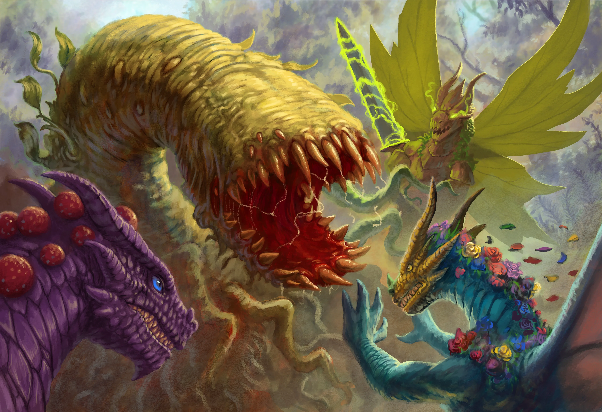

|
在我考察莱希龙社会的整个过程中，我成功避免了遭到任何莱希龙的袭击。这算不上什么了不起的成就，因此不必为此夸赞鄙人。与其他好几支巨龙家族不同，莱希龙的五大分支没有哪一支格外好勇斗狠。不过，我依然渴望深入了解莱希龙的交战方式，因而在各场访谈中都对此做了广泛探询。 遗憾的是，这类提问往往会加剧受访者的戒心，因为他们通常会将针对自身战斗技艺的打听视作可疑之举。言谈间隐约透出一种怀疑，仿佛觉得我是在为某种袭击提前刺探情报，好摸清如何在战斗中对付他们。把纯粹出于学术好奇的探究扣上这种帽子，实在荒谬绝伦。不过平心而论，一旦这些资料付梓出版，我也无法控制谁会读到并掌握它们，所以想来他们的顾虑也并非全无道理。 尽管我还是设法从沿途结识的各路巨龙线人口中慢慢拼凑出了所需的信息，但对于永光莱希龙及其能力，我仍亟需更多一手资料。一如既往，这类能力千差万别且难以定量衡量，于是我采用了屡试不爽的老办法：直接向永光莱希龙冒险者取经。 透过冒险者们讲述的传奇经历，我得以归纳出大量有关永光莱希龙战斗风格的宝贵情报――尽管这些情报全都带有众多莱希龙冒险者的个人视角。这难免使我的资料起初受到个案轶闻的偏差影响，直到我收集到足够庞大的样本来源，才得以从中提炼出普遍共性，并将每位冒险者独有的怪癖与特例逐一滤除。 亲爱的读者，虽然下文的剖析重点在于我为你悉心推演阐明的普遍规律，但我认为最好还是收录至少一则我最钟爱的轶事，好让你直观感受单份个体报告的原貌。把这则故事与我的最终结论加以对照比较，定能帮助你更透彻地理解我的研究脉络！ 为此，我挑选了一对战果颇丰的永光莱希龙冒险者搭档的故事――他们曾完成过不下数桩委托，有时仅凭二人同行，有时则作为更大冒险团队的一员出战。请留心你能从他们的经历中学到什么，也不妨琢磨一番：其中哪些更偏向这两条特定永光龙的个人发挥，哪些又是永光莱希龙普遍适用的通则！我毫不怀疑，慧眼如炬的读者，你定能像我初闻此故事时一样敏锐地洞察其中的奥妙。 平息活体炼狱在一片幽僻森林的深处，一场熊熊大火骤然燃起，火势迅速蔓延，眼看就要将整片森林化为焦土。究竟是旅人疏忽留下的营火、焰火魔法酿成的意外，还是另有隐情？经调查发现，原来是一道通往火元素位面的裂隙在此洞开，令一头危险的“活体炼狱”――该位面强大的元素原住民――得以跨界来到凡世……或许用“得以”并不恰当，说“被迫”更为贴切，毕竟那道裂隙是硬生生将这位原住民吸了进去，再吐到了这片林海之中。 说到活体炼狱，这类存在本非蓄意作恶，但也绝不会为“附带损害”这种无聊的小事费心计较。它们同样不是毫无理智的莽兽，而是聪明得懂得迂回打击对手――例如故意点燃一处聚落来制造恐慌、分散注意。因此，哪怕它们本性算不上格外邪恶，也完全不在乎造成惨重的附带破坏。 可想而知，一头闯进森林的活体炼狱，简直就像谚语里闯进瓷器店的白龙――对落脚之处毫无顾忌，自然也就成了毁灭与混乱即将降临的凶兆。 雪上加霜的是，这头特定的活体炼狱对自己被迫迁徙到凡世大为恼火，更别提落脚点还是一片充盈着木元素能量、放眼望去连半点火星都见不着的森林。倘若它只是随性游荡、顺带在身后留下零星火头，对森林而言便已是莫大的隐患；可当它决定把满腔焦躁与憋闷直接发泄在周遭的林木上时，局势瞬间升级成了一场彻头彻尾的灭顶浩劫。 正当你在脑海中勾勒这幅危机四伏的画面时，且迎出我们这对意想不到的巨龙英雄：精擅控水之道的巨藻龙杜维莱亚克斯，以及搜罗了各式与“丰收”概念神秘相连的护符与秘物、借以削弱并击败强敌的丰收龙薇克里斯托斯。活体炼狱在魔法与元素威能的烈度上大致堪比一条实力稍弱的成年龙，而在事发地附近，杜维莱亚克斯与薇克里斯托斯正是唯一真正有希望击败这等强敌的冒险者。尽管他们尚且年少，永恒之光仪式却已令杜维莱亚克斯与薇克里斯托斯成长到了足以挑战此类强敌并生还的境界。 虽说森林中的其他原住民迟早也会赶来保卫家园，但这两条永光莱希龙还是抢在火势失控、演变为天灾级山火之前火速驰援。抵达现场后，他们曾试着用火元素的炽烈语言与这头活体炼狱讲道理，可这头受困异乡的元素生物根本拒绝沟通。 由于杜维莱亚克斯的灵魂中寄宿着一尊强大的水元素存在，活体炼狱似乎对他怀有格外的憎恶，谈判几乎在瞬间彻底破裂。两条永光莱希龙当即拉开阵型，严阵以待！ 两位冒险者立刻意识到这将是一场恶战，走位布局将是胜负关键。倘若离烈焰太近，火舌便会将他们吞没；可若想扑灭强敌，他们又不得不贴近交锋。然而还没等他们做出反应，那头活体炼狱便猛然纵身一跃，仅凭一记惊人的大跳便将二人强行隔开，随即轰然爆发出狂猛的烈焰。 杜维莱亚克斯当机立断，唤出一团元素水泡并在火元素身上轰然炸裂，令它的火焰滋滋作响、威势骤减。与此同时，薇克里斯托斯在随身携带的各式秘物中飞快翻找，很快摸出了自己想要的东西――一尊雕刻成稻草人模样的微型偶象，原本用于按照仪式焚烧以护佑庄稼免遭火灾。借由将偶象的神秘力量与眼前的大火相连，她的攻击便能抽离并封存这头元素生物的力量，对其造成的削弱远远超出一把铁锹理应达到的极限――哪怕那是一把铭刻着魔法符文的铁锹。 在此之前一直肆意横行、未逢敌手的活体炼狱，显然在这两套技艺的夹击下吃了苦头。然而，尽管杜维莱亚克斯的水幕护盾屡屡受挫其猛烈的火焰攻势，这头元素生物依然顽强凶悍。伴随着一团炽烈的苍蓝烈焰，它向杜维莱亚克斯轰出了毁灭性的一击。猝不及防的杜维莱亚克斯瞬间被烈火吞噬，在连绵不绝的猛攻下力竭倒地。 眼见同伴倒下，薇克里斯托斯纵身跃入熊熊烈火之中，将手中铁锹狠狠刺进狂暴的火焰深处，直取其纯粹的元素核心。这尊强横的元素生物惊骇地看着薇克里斯托斯硬生生挖出它的心脏，整具躯体随之轰然爆裂。杜维莱亚克斯在爆炸余波中侥幸捡回一命，而后的故事便已传为佳话。 ――永光贤者卡利赞德雷克斯 化身巨龙！ |
 莱希龙战术与技艺 |